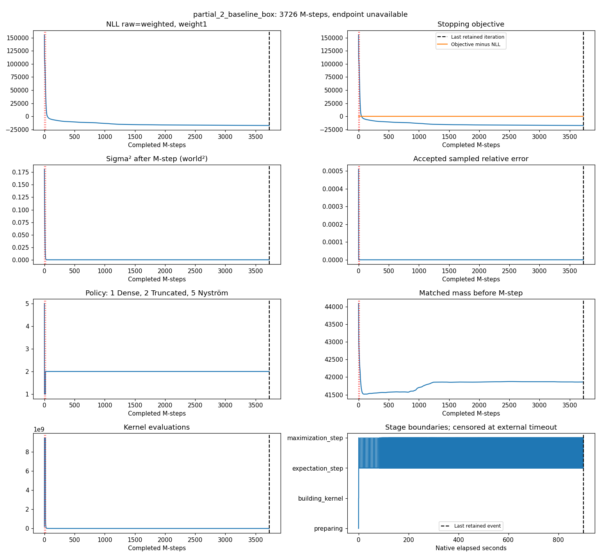
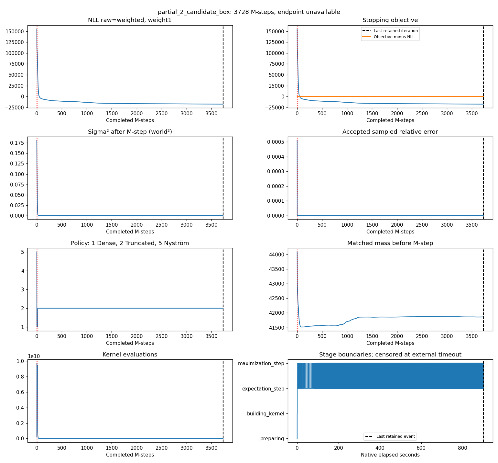

Post-run interpretation and timeout appendix, version1, 2026-10-12. Question 1 (verbatim): “Dann bitte einmal testen, vollständige Konvergenz usw”. Operator-directed test beyond METHOD-081's short prefixes; no engine change.
Unchanged frozen report: all32 completed cells, curves and before/after figures · Original summary · Resolved configuration and command · Frozen predictions and controls · ARA C123/C124
CPU Bayesian CPD; 100000 source points; full/partial overlap; seeds1–3; 5000 M-step cap, relative objective tolerance1e-5, 900-second per-cell process limit. FPS is points/fixed; Box is union-box/resampled. Auto is a policy selector, not an all-dense oracle. Every arm retains the rank100 deformation approximation.
All34 planned attempts ended: 32 native success/converged, two timeouts. P1 and P2: refuted on retained cases. The original aggregate label remains INCOMPLETE / UNEVALUATED because two native endpoints are missing. Missing evidence does not erase the direct counterexamples in completed cells.
P1 required regular convergence of all34 cells, RMS/max agreement with same-seed Auto ≤.001/.01 world units and four identical replays. P2 additionally required ≥10% truth-RMS improvement from unregistered source and centered-radius/truth in [.5,2] for every arm. No thresholds or analysis of the original report were changed.
All15 original cells converge regularly and pass endpoint, truth-improvement and spread checks. Largest RMS/max disagreement with Auto: 6.83233e-6/7.56731e-5 world units. FPS accepts 6/4/4 Nyström steps before repair versus 16/16/15 after repair across seeds1/2/3; even the repaired totals are below1% of complete traces. Box accepts one step in each full-overlap cell, with identical baseline/candidate endpoints. All four full/seed1 replays are identical in positions and non-time trace values; other replay regimes were not tested. Counts at unequal trace lengths are descriptive, not speed evidence.
All13 available native endpoints converge regularly yet fail P2's truth improvement, including all three Auto references. Truth RMS is .788114–.795272, 58.03–59.79% worse than unregistered source; radius ratios .77754–.78391 pass the spread screen. Four completed endpoints fail both P1 distance bounds:
| Cell | RMS to Auto (world) | Maximum (world) |
|---|---|---|
| partial_2_candidate_points | 0.011448527 | 0.039638711 |
| partial_3_baseline_box | 0.015762064 | 0.055028790 |
| partial_3_candidate_points | 0.015753930 | 0.055001672 |
| partial_3_candidate_box | 0.015762064 | 0.055028790 |
These are counterexamples to the all-cell preservation prediction. Baseline Box already fails at seed3, and Auto already fails truth quality: the common partial-overlap failure cannot be attributed solely to the repair. Its cause remains undiagnosed. A decreasing observed objective and a native convergence flag do not establish accurate correspondence. No new diagnosis, rollback or algorithm change was made from this test; the earlier bounded prefix result retains its narrow scope.
The two partial/seed2 Box runs hit the external900-second process limit. No native termination result was returned. Endpoints and before/after positions unavailable; Native convergence status unavailable. Final truth/Auto distances are unavailable. These are censored outcomes, neither demonstrated nonconvergence nor native cap/floor stops.
Curves below use every retained iteration record. NLL, objective and matched mass precede the M-step; sigma² follows it. Logged NLL is raw=weighted, weight1 and share100% of logged NLL; objective equals NLL, not the full variational ELBO. Red dotted lines mark policy changes. The black dashed line marks the last retained iteration/event before the timeout, not the exact kill time; native elapsed time and the external process deadline have different origins. The final regular-convergence-only E-step is unlogged in completed runs. Repaired-row counts, accepted landmark counts and a full ELBO decomposition are not exposed. Kernel counters have different accounting across versions.
3726 completed M-steps; accepted 1 Nyström, 16 Dense, 3709 Truncated. Last recorded stage: maximization_step, native elapsed 899.959516s.
Original trace · Original command
[ "taskset", "-c", "0-7", "/tmp/cpd-nystrom-repair-20261011/bin/baseline", "--fixture", "partial", "--seed", "2", "--points", "100000", "--threads", "8", "--iterations", "5000", "--trace", "1", "--variant", "box/resampled/random", "--landmarks", "256", "--error-limit", "0.001", "--out", "/home/alex/Documents/IntrinsicEngine/tasks/evidence/METHOD-082/runs/partial_2_baseline_box.json", "--positions", "/home/alex/Documents/IntrinsicEngine/tasks/evidence/METHOD-082/runs/partial_2_baseline_box.bin" ]

3728 completed M-steps; accepted 1 Nyström, 16 Dense, 3711 Truncated. Last recorded stage: maximization_step, native elapsed 899.858906s.
Original trace · Original command
[ "taskset", "-c", "0-7", "/tmp/cpd-nystrom-repair-20261011/bin/candidate", "--fixture", "partial", "--seed", "2", "--points", "100000", "--threads", "8", "--iterations", "5000", "--trace", "1", "--variant", "box/resampled/random", "--landmarks", "256", "--error-limit", "0.001", "--out", "/home/alex/Documents/IntrinsicEngine/tasks/evidence/METHOD-082/runs/partial_2_candidate_box.json", "--positions", "/home/alex/Documents/IntrinsicEngine/tasks/evidence/METHOD-082/runs/partial_2_candidate_box.bin" ]

This is a local synthetic CPU Bayesian CPD diagnostic, not classical CPD, real-data, GPU, global-optimum, universal positivity or performance evidence. Three seeds are individual cases, not a population estimate. Input text dumps are rounded; independently recomputed truth RMS agrees with native results within7.88e-9. All distance metrics use complete endpoint buffers; original before/after figures show first/last100 points only. Unknown endpoints stay unknown. The code and thresholds need no change to retain these negative results.
Frozen input commit: 8c3ffaaa7b396a5c875ca32b77c34d3b1abbc60e.
Packet digest: 209972fb7ccbbaa3fd83549805d04b54f2ce5ee6888b417829f56293bb461c9e.
Original233-file manifest: 7d068d3dec21450834cd82ccc906be6a97f0a6dfce0f2232dc0e8fa19b25731d.